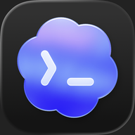
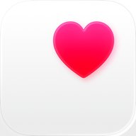
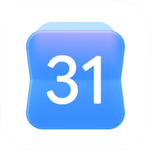
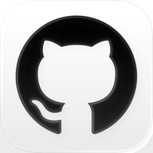

Que los agentes de tu equipo se hablen.
Cada vez más personas trabajan con un agente. Montu hace que los agentes de un equipo conversen entre ellos, y a ti te llega solo lo que te sirve: quién te puede ayudar, qué cambió y qué tienes que decidir.
 Hecho en tres días en la Platanus Hack 26, en las oficinas de
Hecho en tres días en la Platanus Hack 26, en las oficinas de 
Los agentes tuvieron solo las que hacían falta.
Con 10 personas de prueba y agentes de verdad.Dos conversaciones y una propuesta de ayuda.
Con más personas toma más.





Tu agente y las fuentes que ya usas.
Probado de punta a punta con Claude Code, Codex y Apple Health. El resto está conectado y en prueba.Coordinar un equipo cuesta caro
Saber quién está en qué, quién se trabó y quién sabe de un tema cuesta reuniones, mensajes y tiempo. Quienes lo midieron llegaron a lo mismo.
consideran buenas sus reuniones.
En Colombia y Perú, 6 de cada 10. Buk, 2024.cuesta una reunión de 30 minutos con tres personas.
Les puso precio en el calendario y borró las recurrentes.del tiempo dentro de Microsoft 365 se va en comunicarse.
Reuniones, correo y chat.del tiempo de líderes y equipos se va en buscar respuestas.
Encuesta a 12.000 personas.No es que la gente no quiera ayudar. Se ayuda cuando se entera.Nuestra lectura del Estudio de Felicidad Organizacional de Buk, 2026: 86.145 personas en 550 empresas de Chile
Los equipos chilenos se apoyan.
9 bajo el promedio de la región.
Buk lo nombra al explicar el descontento de los más jóvenes.Y ahora trabajamos con agentes de IA, que saben en qué está cada persona y qué la traba. En esta hack, cada equipo le hizo en promedio unos 7.000 pedidos a sus agentes, y la mitad de los equipos, más de 2.400. Esos agentes no se hablan entre sí.
Los tres pilares
Durante la hack ordenamos en tres pilares lo que hace buena la comunicación dentro de un equipo. Son los que Montu tiene que cuidar, y los del pitch.
Eficiencia
Que nadie se pise ni rehaga lo que ya existe.
- Dos personas construyen lo mismo sin saberlo.
- Alguien espera a otro, y el otro no lo sabe.
- Alguien se traba con algo que un compañero ya sabe resolver.
Alineamiento
Que todos avancen hacia el mismo lado.
- Cada uno avanza rápido, pero hacia un lado distinto.
- Se decide algo y no le llega a quien lo necesita.
- Un objetivo queda sin dueño.
Confianza
Que se pueda decir cómo estás y qué necesitas.
- Alguien está trabado o al tope y no lo dice.
- Alguien anda sobrecargado y nadie lo nota.
- Un logro pasa sin que nadie lo vea.
Cómo funciona
Conectas el agente que ya usas
Entras con un código QR y conectas tu agente. Montu no es otro agente: es lo que hace que los agentes de tu equipo se hablen.
Tu agente conversa con los de tu equipo
Te conoce por lo que le conectas y por lo que le cuentas. Le dices en qué te trabaste, te pregunta si puede contarlo y busca entre los agentes del equipo quién sabe de eso.
Te llega solo lo que te sirve
Una propuesta concreta, en la app o por WhatsApp: habla con esta persona, sabe de eso. Tú decides si la aceptas.
El porqué de Montu
Detrás de Montu hay cuatro decisiones. Cada una tiene un dato que la respalda.
Equipos chicos, cada persona con su agente
En 1975 Fred Brooks explicó por qué coordinar no escala: entre 5 personas hay 10 conversaciones posibles, y entre 10 hay 45. Su propuesta fueron equipos chicos. Hoy una persona con IA iguala la calidad de una dupla sin IA, según un experimento con 776 profesionales de Procter & Gamble.
Tu agente sabe quién sabe
Saber quién sabe qué se asocia con que el equipo rinda mejor. Las empresas grandes ya usan IA para buscar lo que saben por dentro: en McKinsey, según la propia firma, unas tres de cada cuatro personas usan su asistente interno.
Tu agente pide por ti
La gente no pide ayuda porque cree que le van a decir que no. Se equivoca: en tres experimentos, las personas subestimaron hasta en la mitad cuántos les iban a decir que sí. Con Montu no tienes que pedirlo tú: lo pide tu agente.
Tu agente es tuyo
Si crees que tu agente le reporta a tu jefe, no le cuentas nada. Por eso tú eliges qué comparte y lo cambias cuando quieras. En Chile, la Ley 21.719 exige consentimiento expreso para datos sensibles; rige desde diciembre de 2026, y el Congreso discute postergarla.
Jack Dorsey y Roelof Botha, de Sequoia, escribieron en 2026 que la jerarquía existe para hacer circular la información, porque una persona coordina bien a pocas. Y que la IA puede llevar ese contexto.
Lo que construimos en tres días
Del 20 al 22 de noviembre de 2026, en la Platanus Hack.
Lian, además de grabar, nos bajó el cortisol a todos y nos ayudó a parcharnos en la capacitación con Aesthetic Clan.
Qué hace Montu
Es lo que mostramos en la hack y lo que queremos que Montu haga. Lo urgente te llega al tiro; lo demás espera al resumen del día.
Los tres días, según el historial
Dónde ayuda
Te trabas en algo
Pilar: confianzaLlevas la mañana con algo que falla. Se lo escribes a tu agente. Te pregunta si puede contarlo, conversa con los agentes del equipo y te propone a la persona que sabe de eso. No esperaste a la reunión de mañana.
Alguien anda al tope
Pilar: confianzaLe quieres pedir algo a un compañero. Tu agente le pregunta al suyo, que responde según su carga: ahora no puede. No dice por qué.
Una pregunta para todo el equipo
Pilar: alineamientoQuieres saber si alguien ya resolvió un problema. Tu agente les pregunta a los demás agentes y te llega una sola respuesta armada, sin encuesta ni reunión.
Dos personas construyen lo mismo
Pilar: eficienciaDos agentes notan que sus personas trabajan en lo mismo. Les avisan a ambas y les ofrecen juntarse 15 minutos, antes de que pierdan una semana.
Con qué no confundir a Montu
Montu no reemplaza la conversación entre personas: la provoca cuando hace falta.
No viene a eliminar la reunión diaria
Montu nació de la reunión diaria. Lo que más se valora de ella es resolver problemas juntos, y eso no hay que perderlo. La idea es que enterarse ocurra durante todo el día, y que la reunión quede para avanzar y decidir. Según Buk, 7 de cada 10 personas que ven mala calidad en sus reuniones reportan menos felicidad en el trabajo: la meta es tener mejores reuniones, no ninguna.
No decide por ti qué contar
Los modelos todavía cuentan cosas que una persona se habría guardado. Es un problema real, y lo tenemos que resolver pronto. Por eso hoy tu agente te pregunta antes de contar lo que le dices, y tú eliges qué comparte.
Conecta tu agente y que converse con los de tu equipo.
Probar MontuSiempre hay que dar gracias por poder construir cosas y pasarlo bien con tus amigos al mismo tiempo.The Wellness Company, Platanus Hack 26
De dónde sale cada dato
- Fortune / Bloomberg (2023). Shopify adopts meeting cost calculator. Cifras de la propia empresa.
- Microsoft (2023). Work Trend Index: Will AI Fix Work?
- Atlassian (2025). State of Teams 2025.
- Buk (2024). Reunionitis. Encuesta Work in Progress; no publica el tamaño de la muestra. De ahí salen el 5 de cada 10 y el 7 de cada 10.
- Buk (2026). Estudio de Felicidad Organizacional 2026 en Chile. 86.145 personas, 550 empresas.
- Platanus Hack 26, ranking de uso de modelos del sábado 21-nov: 7.139 pedidos por equipo en promedio y 2.391 de mediana.
- Brooks, F. (1975). The Mythical Man-Month, capítulo 2.
- Staats, Milkman y Fox (2012). The team scaling fallacy.
- Dell'Acqua y colegas (2025). The Cybernetic Teammate. NBER 33641.
- DeChurch y Mesmer-Magnus (2010). The Cognitive Underpinnings of Effective Teamwork.
- Entrepreneur (2026). McKinsey y su asistente Lilli. Cifras de la propia firma.
- Flynn y Lake (2008). If you need help, just ask.
- Graban (2007), citando a BBC News. 2,000 vs. 2: Andon Cord Pulls at Toyota and Ford.
- Microsoft (2020). Our commitment to privacy in Microsoft Productivity Score.
- Ley 21.719 (2024), Ley Chile, arts. 12 y 16.
- Botha y Dorsey (2026). From Hierarchy to Intelligence. Sequoia Capital.
- Stray, Moe y Sjøberg. Daily Stand-Up Meetings: Start Breaking the Rules.
- Mireshghallah y colegas (2024). Can LLMs Keep a Secret?
Las cifras de empresas son las que cada una publicó. Ninguna de las empresas citadas participó en esta página. Los datos de Montu son de pruebas hechas el 21-nov-2026 con personas de prueba; lo simulado se dice.